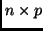

You will need to write a function called dr.fit.M.poly
that estimates the matrix for your method. You can model this
function after the function dr.fit.M.sir shown in
Table 1. The important arguments that are passed to
this function include z, which is an  rotated
and centered data matrix with no missing values; y, which
is the response vector or matrix, and w, which is the
vector of weights, if any. If your method requires other
parameters, for example setting a degree of a polynomial, simply
add the argument
degree=2 to the list of function arguments. This sets the
default value of degree equal to 2. The ``...''
argument in the functions allow you to add the degree
argument when you call the function dr. Your function must
return a list, including the argument M, which is the
matrix of interest. can be either a square matrix leading to
an analysis of eigenvalues and eigenvectors, as in the example for
sir, or it can be a rectangular matrix, leading to use of
singular values and vectors. All entries in the list will become
attributes of the resulting object. For example, if your list is
list(z=z,degree=degree), when you create an object like
> i1 <- dr(LBM~Ht+Wt+RCC+WCC,method="poly",degree=3)
the value of i1$degree will be 3.